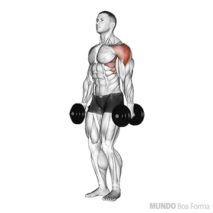
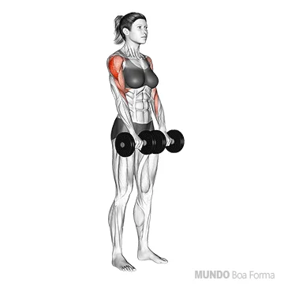
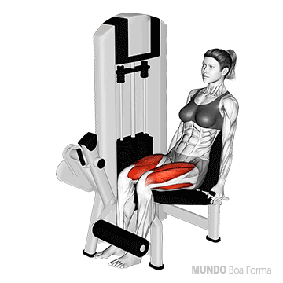

Ombros
1. Desenvolvimento Lateral com Halteres
Realizar 3 séries de 10-12 repetições carga baixa
Levantar os braços de forma que consiga ver os dois antebraços com sua visão periferica, mantenha os cotovelos ligeiramente dobrados
inspire e levante os braços expirando, mantenha os braços ao alto por 1s e em seguida baixe concentrando o movimento e inspirando novamente.
2. Elevação Frontal

Realizar 3 séries de 10-12 repetições carga baixa
O ideal é que use uma barra ou pega que possibilite o movimento com as mãos proximas e as palmas voltadas para baixo
posicionar os pés numa distancia da largura dos ombros, mantenha a postura e olhe fixamente para frente, inspire e levante a carga até a altura do pescoço com os braços esticados expirando o ar.
3. Desenvolvimento Com Halteres

Realizar 3 séries de 10-12 repetições carga baixa
Segurar halteres ao lado da cabeça na largura dos ombros e focar em manter os cotovelos ligeiramente a frente
inspirar e levantar a carga para cima expirando, em seguida baixe a carga para a posição inicial inspirando.
4. Remada Alta Com Halteres
Realizar 3 séries de 10-12 repetições carga baixa
Mantenha a postura e olhe fixamente para frente, afaste os pés na largura dos ombros
com os halteres posicionados a frente do corpo, inspire e levante a carca até a altura do peito expirando o ar, mantenha a carga por 1s e baixe concentrando o movimento e inspirando.
Perna
Exercios com foco em Glúeteos
1. Agachamento

Realizar 4 séries de 8-12 repetições carga máxima
1. Posicione seus pé ligeiramente mais abertos que a largura dos ombros e a barra nos trapesios de maneira que a carga esteja bem diividida entre os dois lados.
2. Mantenha o olhar sempre para frente, inspire e ative seu core.
3. Execute o agachamento sem inclinar seu tronco para frente demasiadamente ou arquear a lombrar.
4. Suba com a carga expirando o ar, foque nos seus joelhos para que não faça uma rotação orizontal para o interior ou exterior não natural.
2. Búlgaro

Realizar 3 séries de 10-15 repetições com cada perna
carga máxima
Se posicionar conforme o video abaixo faz toda a diferença !
posicione o pé corretamente, sempre apontados para frente, variar sempre entre perna Dir e Esq para dar descanso a perna treinada anteriormente. O tempo de descanço entre series deve ser minimo.
Esse é um exercicio de longa duração, não intercale ele com qualquer outro entre cada serie, foque em fazer somente esse
3. Abdutora "Para Gluteos"

3 séries de 10-12 repetições carga máxima
Tudo oque você precisa saber sobre esse exercicio esta no video abaixo.
4. Agachamento sumo com carga

3 séries de 10-12 repetições carga máxima
Para executar esse exercicio com perfeição a postura é indispensável !
Usar carga maxima em qualquer exercicio de glúeteo é essencial, no entanto, a postura torna o exercício efetivo e previne lesões, então escolhar uma carga máxima na qual consigar fazer o exercício com uma boa postura e movimentos concentrados.
Com a carga predefinida, escolha uma plataforma que possa proporcionar a execução do movimento a fundo com os braços esticados e o troco ereto sem que a carga toque o chão, baixe ao maximo inspirando, levante com a carga expirando o ár olhando sempre para frente.
Elevação Pélvica

4 séries de 10 repetições carga máxima
Para que esse exercício seja efetivo é importante usar a combinação de carga maxima possível e movimentos concentrados.
O USO DE UMA PROTEÇÃO NA PELVE
É INDISPENSÁVEL
com o auxilio de um banco e com a carga predefinida , inspire e levante o quadril empurrando os calcanhares e expirando, mantenha a carga por 1s no ár e em seguida baixe o quadril inspirando novamente.
Leg Press

Realizar 3 séries de 10-12 repetições carga máxima
Com uma boa carga predefinida, posicione seus pés na largura dos ombros na plataforma, inspire e empure a carga com força total expirando o ar, nunca esticar as pernas por completo, em seguida baixe a carga de maneira concentrada inspirando.
Extensora
Realizar 3 séries de 10-12 repetições carga máxima
Selecione uma boa carga e sente no aparelho de maneira que os glúteos e toda a extensão da coxa até o joelho estejam apoiadas pelo banco.
inspire e levante a carga com força expirando o ar, em seguida baixe a carga de maneira concentrada inspirando ; a sequencia e a velocidade com que você faz esse exercicio na fase concentrica (levantando) sendo ela rápida e na fase excentrica (baixando) devagar, vai ditar os seus melhores resultados.
Adultora "Fechando"

Realizar 3 séries de 10-12 repetições carga máxima
A carga para cada um varia muito de pessoa pra pessoa nesse exercicio, o ideal é escolher uma carga que force ao maximo o músculo mas com responsabilidade.
Localize a pegas das mãos, inspire fundo e feche os joelhos com calma expirando o ár, mantenha a cagar por 1s e em seguida afaste os joelhos concentrando o movimento.
Flexora

Realizar 3 séries de 10-12 repetições carga máxima
Para a execução desse exercicio há uma infinidade de aparelhos para realizá-lo.
na posição disponivel do aparelho, procure uma carga que vai ativar os musculos posteriores da coxa ou musculos isquiotibiais, procure uma execução com volocidade e força na fase concentrica (levantando a carga) e calma e concentração na fase excentrica
(baixando a carga).
Panturrilha

Realizar 4 séries de 20 repetições carga máxima
A panturrilha é um musculo bastante forte e de recuperação rápida, então para ganhos consideráveis nesse musculo, apostar em treinos diarios de intensidade moderada seria a melhor opção.
escolha um local em que consiga apoiar todo o seu peso na parte frontal dos pés e mantenha seu pé em uma postura linear como se estivesse em pé normalmente.
O exercício consiste em levantar e baixar seu proprio peso juntamente com uma carga máxima predefinida de maneira que consiga exercutar as repetições necessarias listadas acima.
NUNCA BAIXAR SEU CALCANHAR ABAIXO DA POSIÇÃO NATURAL DOS SEUS PÉS.